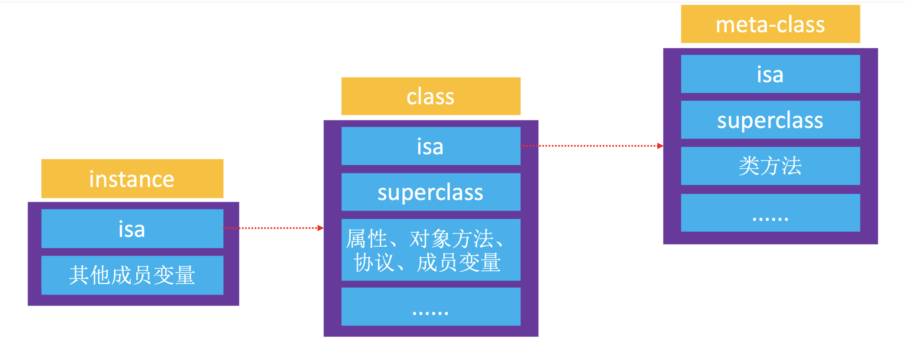
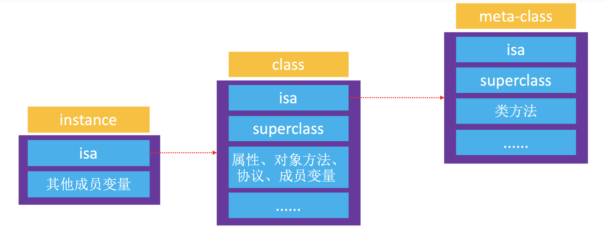

iOS isa 指针
2022年5月15日

实例对象的
isa指针
实例对象的isa指向class；
当调用实例对象方法时，通过实例对象的isa找到对应的实例对象class，最后找到对象方法的实现进行调用；类对象的
isa指针
类对象的isa指向meta-class
当调用类方法时，通过class的isa找到meta-class，最后找到类方法的实现进行调用；


实例对象的 isa 指针
实例对象的 isa 指向 class；
当调用实例对象方法时，通过实例对象的 isa 找到对应的实例对象 class，最后找到对象方法的实现进行调用；
类对象的 isa 指针
类对象的 isa 指向 meta-class
当调用类方法时，通过 class 的 isa 找到 meta-class，最后找到类方法的实现进行调用；